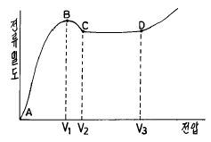
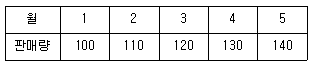
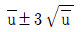
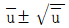
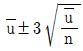
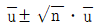

표면처리기능장 (2002-07-21 기출문제)
1과목: 임의 구분
1. 표면적 2.06cm2의 소지금속 위에 은도금을 하려고 한다. 두께를 50μ로 하기 위해서는 약 몇 쿨롬의 전기량이 필요한가? (단, Ag의 비중 10.5, 1F=96500쿨롬, Ag=108)
- 96.5
- 965
- 9650
- 96500
(정답률: 알수없음)

2. 도금의 폐수처리에서 크롬산은 어떤 방법으로 처리해야 하는가?
- 산화처리
- 환원처리
- 침전처리
- 중화처리
(정답률: 알수없음)
3. 20x20cm 의 합금 구리판을 도금하려고 한다.도금을 하는데 40A의 전류가 흘렀을 때 전류밀도는 몇 A/dm2 인가? (단, 판의 두께는 0.5mm 임)
- 9.950
- 4.975
- 3.316
- 1.658
(정답률: 알수없음)
4. 휘스커(WHISKER)가 발생하는 도금은?
- Ag
- Au
- Pb
- Sn
(정답률: 알수없음)
5. 전기도금에서 균일 전착성에 영향을 미치는 것과 관련이 가장 적은 것은?
- 도금액의 종류
- 전류밀도
- 도금면의 형상
- 소지금속의 종류
(정답률: 알수없음)
6. 일반적인 전처리 공정 중 가장 옳은 것은?
- 연마 → 탈지 → 수세 → 전해탈지 → 수세 → 산침지 → 수세 → 중화 → 수세
- 연마 → 전해탈지 → 수세 → 탈지 → 수세 → 산침지 → 수세 → 중화 → 수세
- 연마 → 산침지 → 수세 → 전해탈지 → 수세 → 탈지 → 수세 → 중화 → 수세
- 연마 → 중화 → 수세 → 탈지 → 수세 → 전해탈지 → 수세 → 산침지 → 수세
(정답률: 알수없음)
7. 바렐연마의 이점이 아닌 것은?
- 소형 제품의 대량연마
- 균일한 완성도
- 작업인의 감축
- 최상의 광택
(정답률: 알수없음)
8. 니켈(Nickel)도금욕 중의 붕산의 주 역할은?
- 양극의 용해를 촉진시킨다.
- 전기 전도도를 양호하게 한다.
- 활성제 역할을 한다.
- 완충제 역할을 한다.
(정답률: 알수없음)
9. 아연용융도금에 Aℓ 을 첨가하는 주 목적은?
- 도금속도의 향상
- 도금광택의 향상
- 합금층 발달의 향상
- 첨가제 허용의 향상
(정답률: 알수없음)
10. 초음파 세척이 잘 되는 이유는?
- 수축현상의 활성화
- 탈지제 사용의 가능
- 공동현상의 발생
- 압력의 최대화
(정답률: 알수없음)
11. 광택 니켈 도금 용액에서 pH가 높아지는 것을 낮추려면 일반적으로 무엇을 첨가하는가?
- 황산
- 질산
- 가성소다
- 탄산소다
(정답률: 알수없음)
12. 헬셀(hull cell)시험과 관계가 없는 것은?
- 전착상태 검사
- 밀착성 검사
- 불순물 검사
- 욕조성 검사
(정답률: 알수없음)
13. Jacquet 의 곡선에서 전해연마가 이루어지는 구간은?

- AB구간
- BC구간
- CD구간
- D 이상
(정답률: 알수없음)
14. 시안화동 도금액에서 탄산소다의 역할이 틀린 것은?
- 부식용해를 촉진한다.
- 균일 전착성을 높힌다.
- 전도도를 좋게한다.
- 페하 관리를 용이하게 한다.
(정답률: 알수없음)
15. 인체에 유해물이 아닌 것은?
- 염소
- 염화수소
- 불소
- 산소
(정답률: 알수없음)
16. 다음 중 폭발성의 위험물질이 아닌 것은?
- 과산화물
- 염소산염
- 과망간산염
- 무수크롬산
(정답률: 알수없음)
17. 시안분의 공해를 없애기 위한 목적으로 산화아연과 가성소다만을 사용한 도금액을 무슨 도금액이라고 하는가?
- 산화아연 도금액
- 징케이트 도금액
- 황산아연 도금액
- 시안화아연 도금액
(정답률: 알수없음)
18. 크롬도금의 전류효율에 가장 영향을 미치지 않는 것은?
- 크롬산 농도
- 광택제
- 전류밀도
- 온도
(정답률: 알수없음)
19. 황산구리 도금액의 구리농도 분석시 사용하는 시약으로 옳지 않는 것은?
- NaOH
- NH4OH
- PAN 지시약
- EDTA
(정답률: 알수없음)
20. 도금을 한 철소지 표면에 흠과 피트가 생성되었을 때 철소지가 음극이 되어 보호되게 하려면 어떤 금속도금을 하여야 하는가?
- 구리
- 크롬
- 아연
- 니켈
(정답률: 알수없음)
2과목: 임의 구분
21. 화성처리와 관계가 없는 것은?
- Parkerizing
- Chromate coating
- Bonderizing
- Calorizing
(정답률: 알수없음)
22. 전해에서 음극으로부터 생기는 과전압은?
- 염소 과전압
- 산소 과전압
- 수소 과전압
- 탄산가스 과전압
(정답률: 알수없음)
23. 도금액 조제시 유기 불순물을 제거하기 위한 가장 좋은 처리법은?
- 여과
- 약전해
- 냉각
- 활성탄처리
(정답률: 알수없음)
24. 무전해 도금을 했을 때 밀착성이 가장 좋은 것은?
- ABS 수지
- 폴리에스텔수지
- 폴리에틸렌수지
- 불소수지
(정답률: 알수없음)
25. 도금시 주로 발생하는 피트나 핀홀을 방지하는 방법으로 틀린 것은?
- 저전류 밀도로 도금한다.
- 피트 방지제를 첨가한다.
- pH를 될수록 낮게 한다.
- 도금욕의 교반을 강하게 한다.
(정답률: 알수없음)
26. 시안화구리 도금에서 부풀음, 까짐, 밀착불량 등과 같은 도금불량의 가장 큰 발생원인은?
- 도금욕의 온도가 낮다.
- 구리 이온 농도가 낮다.
- 유리 시안화 소다가 부족하다.
- 가성소다가 부족하다.
(정답률: 알수없음)
27. 아연계 합금도금 중 내식성, 도장 밀착성 및 용접성이 우수하여 자동차용 강판 등에 주로 사용되는 도금은?
- Zn-Mn
- Zn-Se
- Zn-Fe
- Zn-Pb
(정답률: 알수없음)
28. 도금공장에서 소지금속의 미시적인 요철부분을 도금욕의 첨가제에 의한 효과와 전류의 변화에 의한 효과를 이용해서 도금의 전착을 평활하게 하는 전기 도금욕의 능력은?
- 에칭작용 (etching)
- 레벨링작용 (leveling)
- 라이닝작용 (lining)
- 피크링작용 (pickling)
(정답률: 알수없음)
29. 과전압의 설명 중 복극작용과 가장 관계가 깊은 것은?
- 일반적으로 가역적반응 전극에서는 과전압이 낮다.
- 일반적으로 수소발생 반응전극에서는 과전압이 높다.
- 과전압은 조건에 의하여 감소되는 일이 있다.
- 과전압은 전극전위와 평형전위와의 차를 말한다.
(정답률: 알수없음)
30. 플라스틱상의 도금에서 수지성형품의 표면에 미세한 요철을 주는 공정은?
- 감수성 처리
- 에칭
- 탈지
- 활성화
(정답률: 알수없음)
31. 은 도금에 주로 사용되는 도금액은?
- 황산제일주석욕
- 시안화욕
- 붕산욕
- 석회수욕
(정답률: 알수없음)
32. 니켈도금에서 피복력 불량, 구름 낀 도금과 걸이가 검은 빛이 되는 불순물은?
- 알루미늄
- 납
- 구리
- 크롬산
(정답률: 알수없음)
33. 도금공장의 입지조건이 틀린 것은?
- 공장지대를 선택해야 하며 주택지대 및 상업지대는 피해야 한다.
- 공장 내부의 채광 및 조명이 충분해야 한다.
- 능률을 높이기 위해 도금실과 연마실은 같은 장소에 설계되어야 한다.
- 연마실의 제진 설비가 완전 해야 한다.
(정답률: 알수없음)
34. 프린트 배선기판(PCB)의 도금방법 중 다이 스탬핑(die-stamping)법을 가장 옳게 설명 한 것은?
- 접착제가 있는 동박을 금형으로 회로부분만을 떼어서 동박이 없는 절연판에 압착시키는 방법
- 동박이 라미네이트 되어 있지 않는 절연판에 접착제로 인쇄하고 동분말을 뿌려서 접착제를 경화시켜이 부분을 도체화 시키는 방법
- 순전히 무전해 구리도금으로 두꺼운 회로만을 형성시키는 방법
- 절연판에 접착제로 절연피복 동선을 접착시키며 이것을 여러 층으로 만들어 배선을 교차시키는 방법
(정답률: 알수없음)
35. 탄소함유량(%)이 가장 적은 것은?
- 반연강
- 경강
- 극연강
- 최경강
(정답률: 알수없음)
36. 전해액에서 양극의 전자가 외부 연결선을 거쳐 음극으로 흘러가고 음극에서는 전자가 양이온과 전하의 이동반응이 생길 때 음극에서 일어나는 반응은?
- 산화반응
- 중화반응
- 침전반응
- 환원반응
(정답률: 알수없음)
37. 과전압은 전류밀도, 전극의 재질, 액의 온도에 영향을 받는다. 황산용액 중에서 음극으로 사용할 때 수소과전압 이 가장 작은 것은?
- 백금
- 니켈
- 아연
- 카드늄
(정답률: 알수없음)
38. 황산동 도금액의 용량이 1500ℓ 이다. 황산동 250g/ℓ, 황산70g/ℓ 의 조성으로 만들려면 진한 황산이 몇 ℓ 가 필요한가? (단, 황산의 비중은 1.84임)
- 약 37
- 약 47
- 약 57
- 약 67
(정답률: 알수없음)
39. 크롬 도금시 음극에서 일어나는 반응은?
- 산소 가스 발생
- 양극 금속의 산화
- 3가 크롬이 6가 크롬으로 산화
- 금속 크롬의 전착
(정답률: 알수없음)
40. 구리 도금액에서 1가 구리이온이 석출되는 것은?
- 슬파민산구리도금액
- 황산구리도금액
- 붕불화구리도금액
- 시안화구리도금액
(정답률: 알수없음)
3과목: 임의 구분
41. 기계제어장치의 병진운동장치를 구성하는 기본 특성이 아닌 것은?
- 질량
- 탄성
- 감쇠
- 마찰
(정답률: 알수없음)
42. 유압모터의 장단점에 관한 설명 중 틀린 것은?
- 시동, 정지, 역전, 변속, 가속등의 제어가 간단하다.
- 소형, 경량으로 큰 힘을 낸다.
- 작동유내에 먼지가 침입하여도 손상이 거의 없다.
- 온도변화에 의해 유압모터의 특성이 변한다.
(정답률: 알수없음)
43. 엘레베이터 타입의 운송방식의 특징이 아닌 것은?
- 기계가 대형이고 장치의 폭이 크다.
- 필요에 따라 다양한 부속기구를 이용할 수 있다.
- 처리 행정의 변경이 용이하다.
- 연속운동 방식이다.
(정답률: 알수없음)
44. 경질 크롬도금 중 도금피막의 밀착성을 좋게 하기 위하여 반드시 하여야 하는 공정은?
- 초음파 탐상
- 양극에칭
- 너어링 처리
- 열사이클 처리
(정답률: 알수없음)
45. 진공도금에서 플라즈마(plasma)현상이란 어떤 상태인가?
- 자유로이 이동하는 양· 음(+, -)의 하전입자가 공존하여 전기적으로 중성으로 되는 것
- 자유로이 이동하는 양· 음(+, -)의 하전입자가 공존하여 전기적으로 양성으로 되는 것
- 액체가 극도의 고온으로 가열되어 고도로 전리된상태
- 고체가 극도의 고온으로 가열되어 고도로 전리된상태
(정답률: 알수없음)
46. 가공법에 의한 강의 분류에 속하지 않는 것은?
- 단강
- 공석강
- 주강
- 압연강
(정답률: 알수없음)
47. 유압 장치의 특징이 아닌 것은?
- 제어하기가 쉽고 정확하다.
- 힘의 증폭을 이용할 수 있다.
- 복잡하고 안전하나 비경제적이다.
- 일정한 힘과 토크를 낼수 있다.
(정답률: 알수없음)
48. 유압계통에 사용하여 압력의 조정, 방향의 전환, 흐름의 정지, 유량의 조절 기능을 하는 밸브는?
- 시퀜스 밸브
- 온도서보 밸브
- 카운터 밸브
- 유압제어 밸브
(정답률: 알수없음)
49. 도금 공장에서 자동화 설비를 할 때 이점이 아닌 것은?
- 에너지 절약화
- 품질향상
- 공정노력의 경감
- 인력의 증원
(정답률: 알수없음)
50. 유공도 시험(pin hole test)에 속하는 것은?
- 염수분무시험(salt spray test)
- 코로드 코트 시험(corrodkote test)
- 페록실 시험(ferroxyl test)
- 레벨링 시험(leveling test)
(정답률: 알수없음)
51. 약산과 그 염의 혼합 용액이나 약염기와 그 염의 혼합용액은 어느정도까지 희석하거나 또는 적은 양의 산이나 알칼리를 가하여도 본래의 수소 이온농도를 유지하려는 성질을 가진 용액은?
- 혼합용액
- 전해용액
- 공통용액
- 완충용액
(정답률: 알수없음)
52. 알루미늄의 성질이 잘못 설명된 것은?
- 비중이 약 2.7로서 가벼우며 합금으로 만들었을 경우 높은 강도를 유지한다.
- 도전율과 열전도율은 은, 구리, 다음으로 양호하며 송전선 및 액체공기 제조 부품에 사용된다.
- 대기중에서 표면에 자연적으로 밀착력이 불량한 Al2O3의 얇은 피막이 생겨 내식성이 매우 저하된다.
- 색깔이 아름답고 용접성이 우수하다.
(정답률: 알수없음)
53. 강자성체가 아닌 것은?
- Fe
- Co
- Au
- Ni
(정답률: 알수없음)
54. 미리정해진 순서에 따라 각 단계를 순차적으로 행하는 제어는?
- 피이드백 제어
- 닫힌 제어
- 되먹임 제어
- 시퀜스 제어
(정답률: 알수없음)
55. 공급자에 대한 보호와 구입자에 대한 보증의 정도를 규정해 두고 공급자의 요구와 구입자의 요구 양쪽을 만족하도록 하는 샘플링 검사방식은?
- 규준형 샘플링 검사
- 조정형 샘플링 검사
- 선별형 샘플링 검사
- 연속생산형 샘플링 검사
(정답률: 알수없음)
56. 표는 어느 회사의 월별 판매실적을 나타낸 것이다. 5개월 이동평균법으로 6월의 수요를 예측하면?

- 150
- 140
- 130
- 120
(정답률: 알수없음)
57. u 관리도의 공식으로 가장 올바른 것은?




(정답률: 알수없음)
58. 도수분포표를 만드는 목적이 아닌 것은?
- 데이터의 흩어진 모양을 알고 싶을 때
- 많은 데이터로부터 평균치와 표준편차를 구할 때
- 원 데이터를 규격과 대조하고 싶을 때
- 결과나 문제점에 대한 계통적 특성치를 구할 때
(정답률: 알수없음)
59. 설비의 구식화에 의한 열화는?
- 상대적 열화
- 경제적 열화
- 기술적 열화
- 절대적 열화
(정답률: 알수없음)
60. 모든작업을 기본동작으로 분해하고 각 기본동작에 대하여 성질과 조건에 따라 정해놓은 시간치를 적용하여 정미시간을 산정하는 방법은?
- PTS법
- WS법
- 스톱워치법
- 실적기록법
(정답률: 알수없음)
문제에서는 은도금을 하기 위한 두께가 50μm로 주어졌으며, 은의 비중이 10.5이므로 1cm3의 은의 질량은 10.5g입니다. 따라서 2.06cm2의 면적에 50μm의 두께로 은도금을 하기 위해서는 다음과 같은 은의 양이 필요합니다.
2.06cm2 × 50μm × 10.5g/cm3 = 1.08mg
이제 이 은의 양을 이온으로 변환하여 전하량을 계산합니다. 은의 원자량은 108이므로 1.08mg의 은은 다음과 같은 몰수입니다.
1.08mg ÷ 108g/mol = 0.01mol
이 0.01mol의 은 이온은 각각 1개의 전하를 가지므로 전하량은 다음과 같습니다.
0.01mol × 1 = 0.01C
따라서 이 문제에서 필요한 전기량은 0.01C입니다. 하지만 문제에서는 단위를 쿨롬으로 주어졌으므로, 이 값을 쿨롬으로 변환해야 합니다. 1F는 96500쿨롬이므로, 0.01C는 다음과 같이 변환됩니다.
0.01C ÷ 96500쿨롬/F = 0.000103F
이 값은 너무 작으므로, 보기에서 가장 가까운 값인 "96.5"를 선택해야 합니다. 이 값은 1F를 96500쿨롬으로 정의한 것과 같으므로, 0.000103F를 96500으로 곱한 값입니다.
0.000103F × 96500쿨롬/F = 9.94쿨롬 ≈ 96.5쿨롬
따라서 정답은 "96.5"입니다.